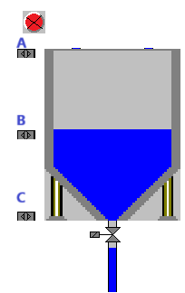
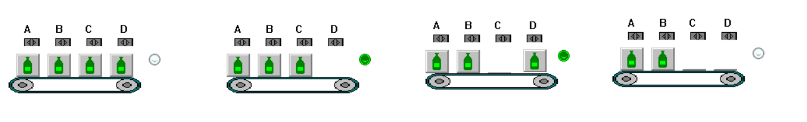
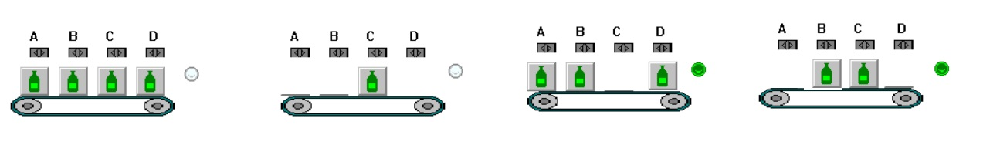
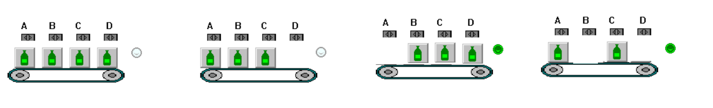
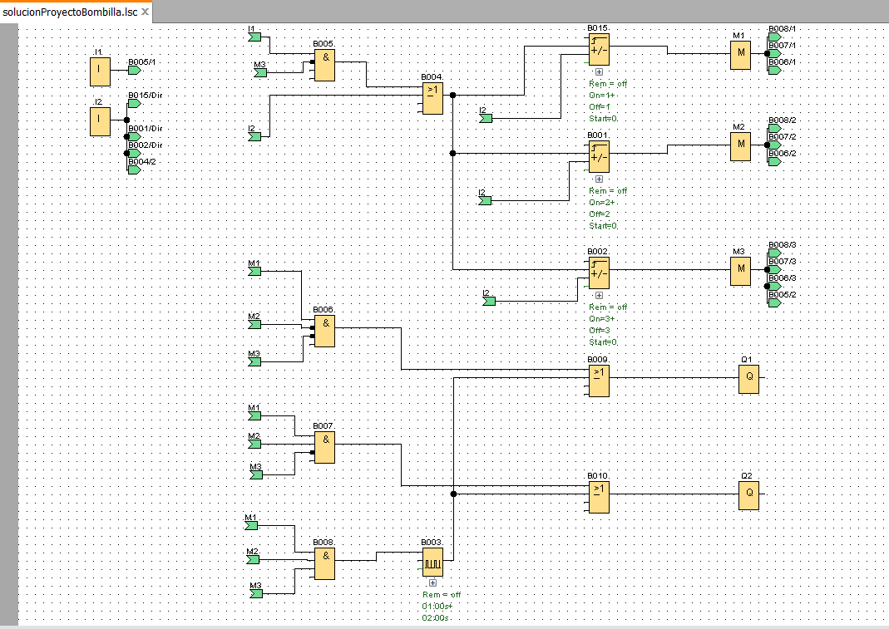
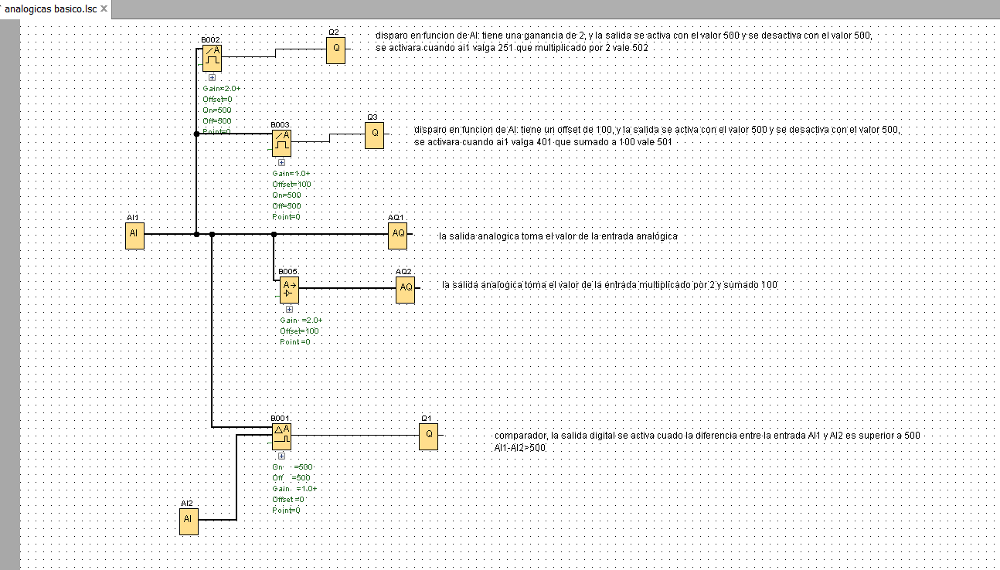

AUTOMATAS
 SSP
SSP
Deposito
En una instalación con un depósito de agua con tres detectores, uno en la parte inferior, otro la parte media, otro en la parte superior y una luz roja.
Crea la función lógica de activación de la luz roja cuando, el depósito no tenga agua o haya un error con las detectores de agua, ejemplo que estén los dos detectores superiores y no esté en inferior
INICIO
Embotelladora
En una instalación embotelladora, me vienen por una cinta transportadora botellas en grupos de 1, 2 3 o 4 botellas,
Cuando los grupos sea de 3 botellas de encendera una luz verde
Crea la función lógica del encendido del piloto
INICIO
Embotelladora 2
En una instalación embotelladora, me vienen por una cinta transportadora botellas en grupos de 1, 2 3 o 4 botellas,
Cuando los grupos sea de 2 o 3 botellas de encendera una luz verde
Crea la función lógica del encendido del piloto
INICIO
Embotelladora 3
En una instalación embotelladora, me vienen por una cinta transportadora botellas en grupos de 1, 2 3 o 4 botellas,
- Las botellas detectadas con el sensor A contienen 3 litros de agua
- Las botellas detectadas con el sensor B contienen 2 litros de agua
- Las botellas detectadas con el sensor C contienen 1 litros de agua
- Las botellas detectadas con el sensor D contienen 1 litros de agua
Crea la función lógica del encendido del piloto
INICIO
Inicio a la programación, encendido 4 bombillas
Realiza el programa y el esquema eléctrico para el LOGO 230RC ( se valorara que este hecho con ordenador o a regla), identifica las entradas del autómata en el programa LOGOSoft Comfort como:
I1 pulsador NO1
I2 pulsador NO2
I3 pulsador NC1
I4 interruptor rotativo.
Q1 bombilla 1
Q2 bombilla 2
Q3 bombilla 3
Q4 bombilla 4
Funcionamiento:
La bombilla conectada a Q1 se puede encender y apagar mediante pulsaciones en el pulsador conectado a I1 o accionando la tecla arriba del logo.
La bombilla conectada a Q2 se enciende pulsando el pulsador conectado a I2 si el interruptor conectado a I4 esta abierto, y se apaga al soltar el pulsador NC conectado a I3
La bombilla conectada a Q3 se enciende con pulsando el pulsador conectado a I2 si el interruptor conectado a I4 esta cerrado, y se apaga al soltar el pulsador NC conectado a I3
La bombilla conectada a Q4 se enciende intermitentemente con una frecuencia de 1 segundo, si hay alguna bombilla conectada a Q1, Q2 o Q3 encendida.
Transfiere el programa al autómata con IP 192.168.1.4, comprueba su funcionamiento, Entrega un informe en pdf donde incluya el programa el nombre de las entradas y salidas y el esquema eléctrico.
Nota:
INICIO
Iluminación y contadores
En la instalación anterior, contamos las pulsaciones sobre el pulsador conectado a I1 y descontamos las pulsaciones sobre el pulsador I2.
Si el valor contado es cero las bombillas Q1 y Q2 están apagadas, si es 1 encendemos la bombilla Q1, si es dos encendemos la bombilla Q2, si es tres encendemos las dos bombillas.
Nota:
Si pulsamos I1 mas de 3 veces no se tendrá en cuenta.
INICIO
Funciones analógicas
INICIO